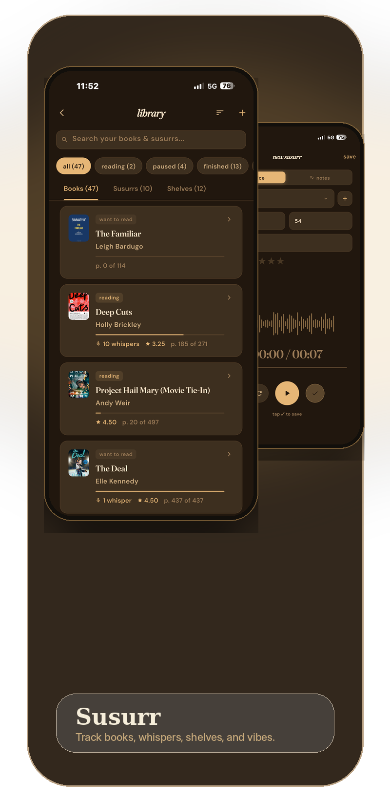

01 — Your shelves
Library Tracking
Keep a record of the books you own and the books you've read. Mark what's in progress, what's finished, and what's waiting for the right evening.
- Add books by title, author, and cover
- Create custom shelves for moods, genres, or seasons
- Track reading progress page by page
